Happy New Year! First post to the year. This selection of digital painting was mostly created at KiwiCon9. It was held in Wellington back in
Decembers. It was the first time I attended and was a great experience. I went with my Raspberry Pi and Wacom drawing tablet. People were
interested in it, from what I saw I was the only one walking around with a portable Raspberry Pi - and definitely the only one with a Wacom Drawing
Tablet.
Here we go. As always I will talk about each piece above:
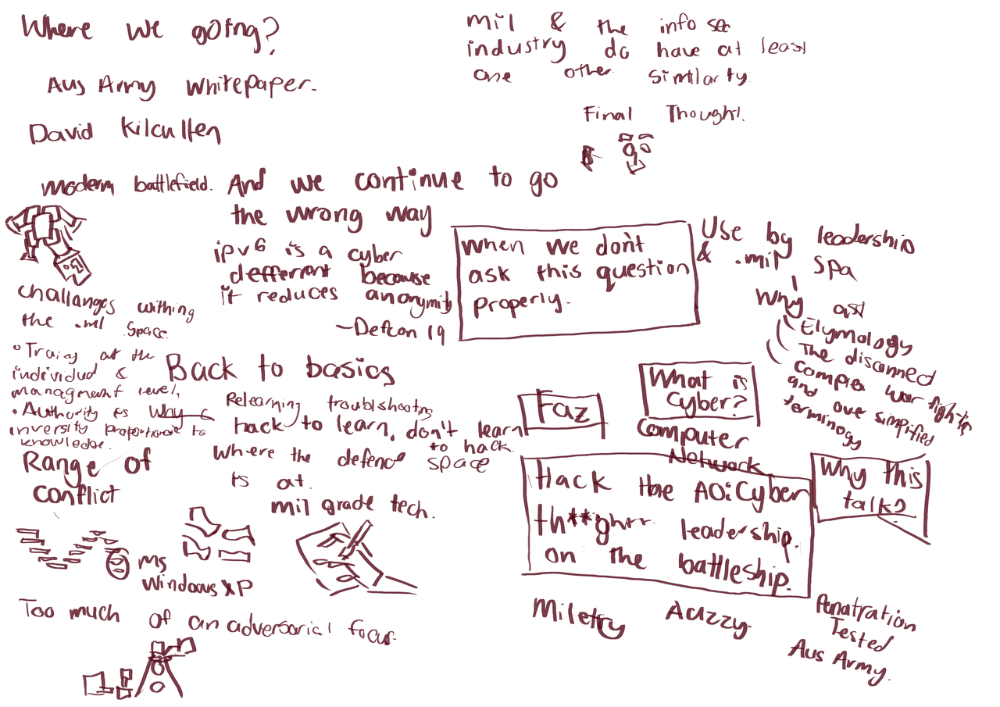
Aussy Military. They had someone talk about the aus military and how it
relates to security.
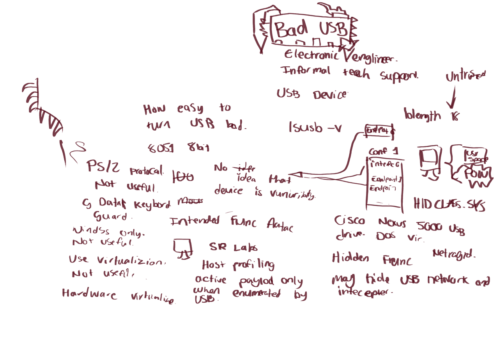
Fear and Loathing on your Desk: BadUSB, and what you should do about it.
Robery Fisk talked about the dangers of usb devices. I was lucky
enough to meet Fisk the night before his talk at the VIP/speakers
party.
I had meet one of his work mates at DevMob the week before and hanged out
with her during KiwiCon9.
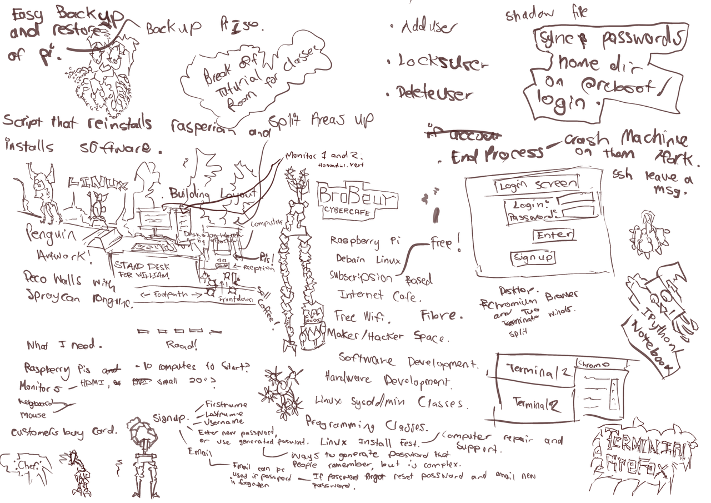
An older work of sketching Raspberry Pi ideas.
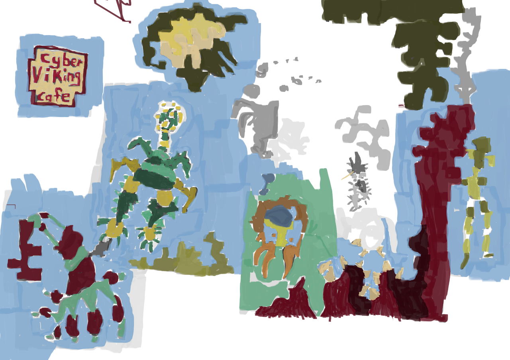
Cyber Viking Cafe. Colour version. Not much words, mostly drawings of
creatures and landscape.
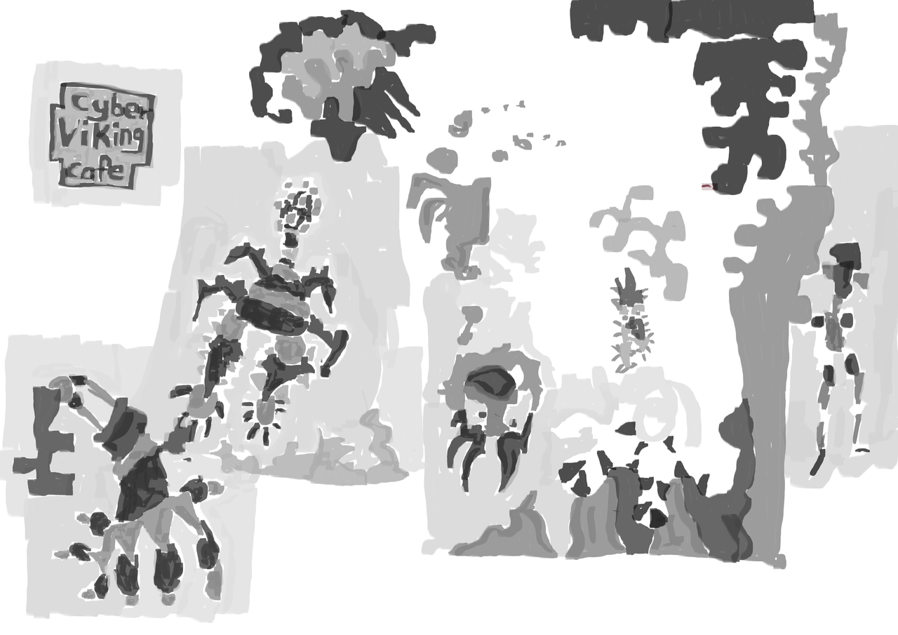
The black and white version of Cyber Viking Cafe image. The colour version
always help define areas in the work.
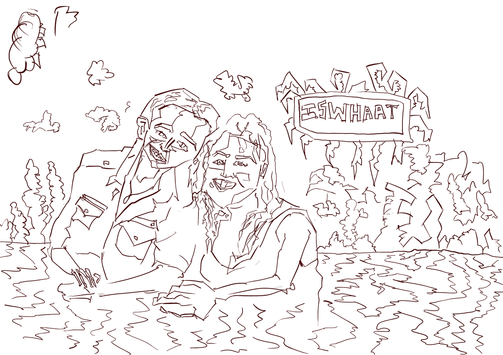
Digital Painting from GetsDrawn of IsWhat.
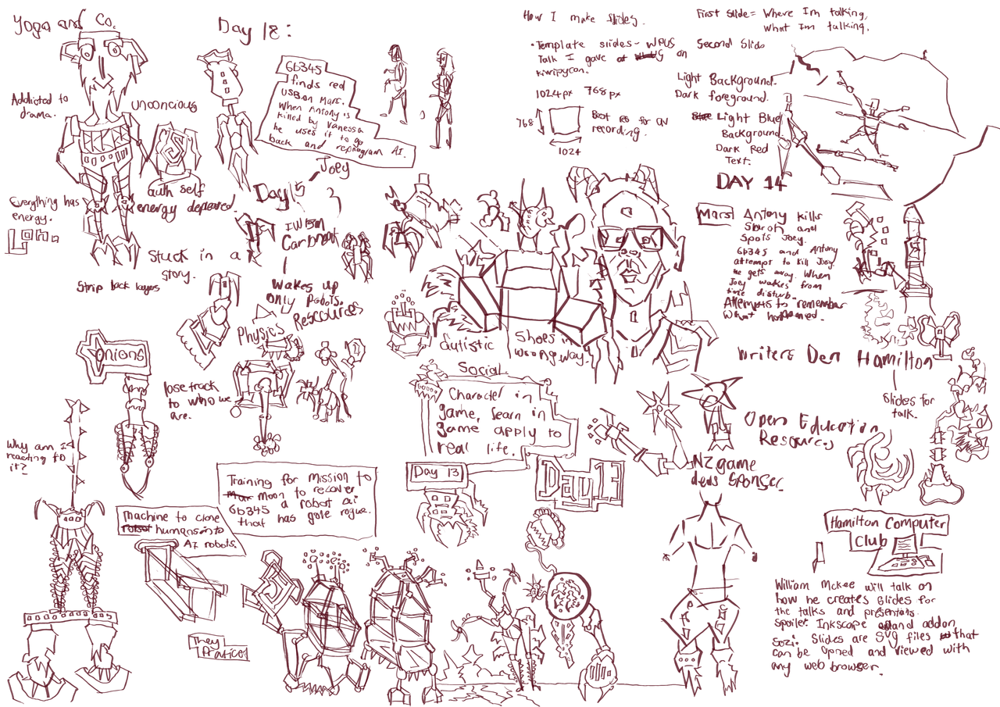
Selection of days back in November of painting - mostly novel based
sketches.

Keynote notes from KiwiCon. They had an event of the NSA swooping in and
arressting the speaker who was talking about xkeyscore.
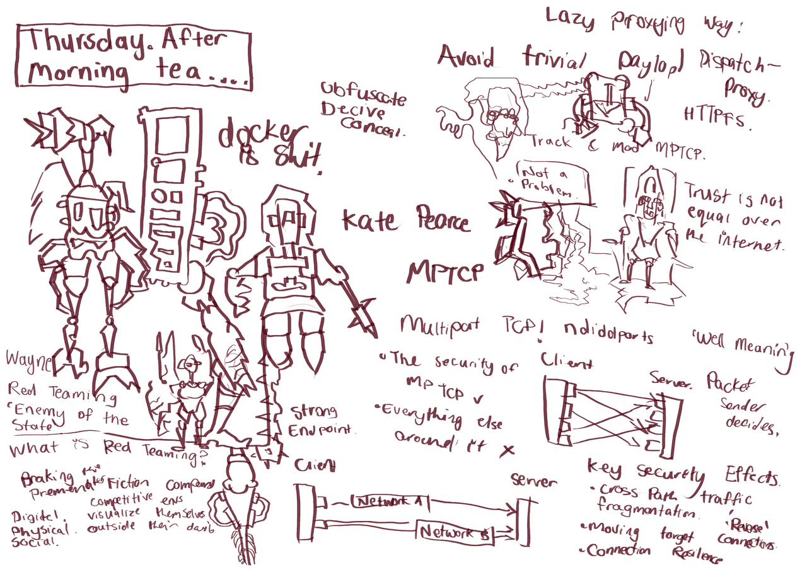
Thursday after morning tea. Kate Pearce did a talk - stuff I mostly didn't
understand.
Wayne did a talk about red teaming which I found very entertaining and
informative. It was one of my favorite talks of the conference.
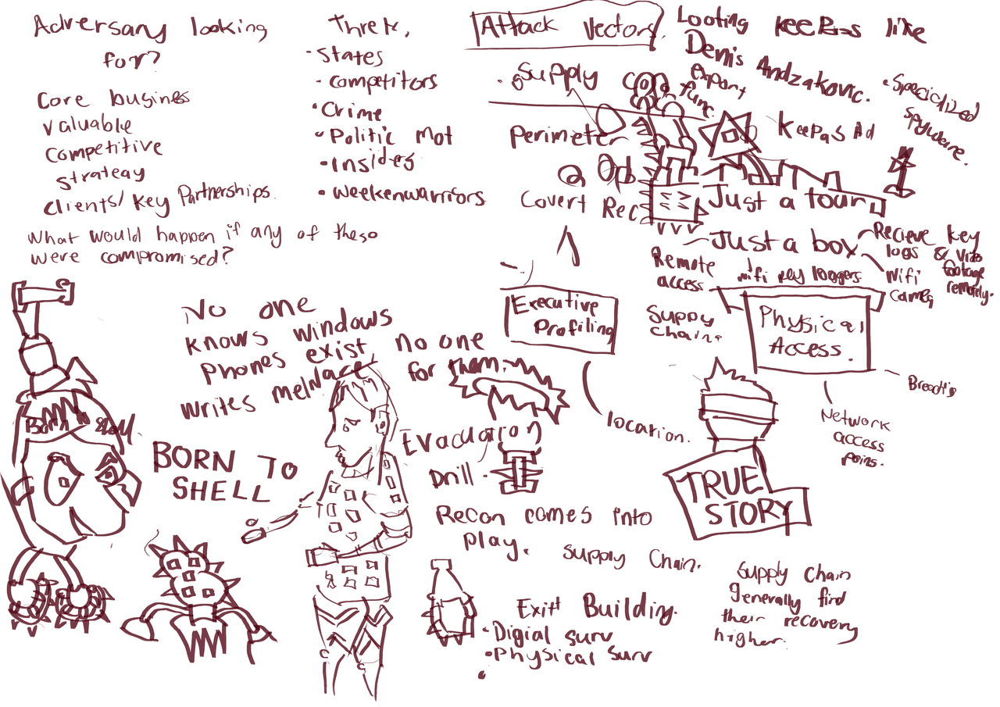
More notes on Waynes red teaming talk. The more interesting the talk is,
the more notes I write.
BORN TO SHELL
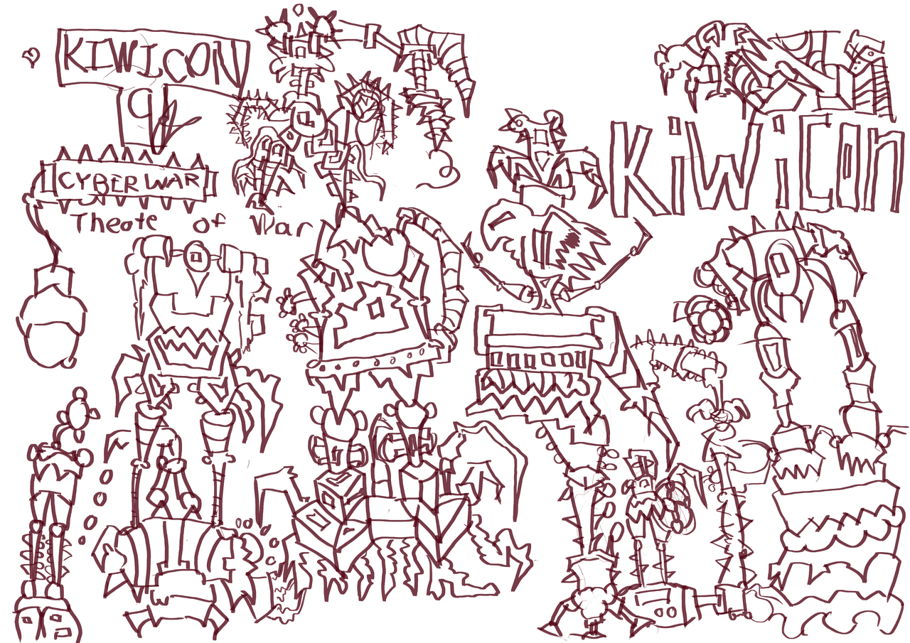
Kiwicon 9. CyberWar. Theate of War. Robotic sketches before the event
started.
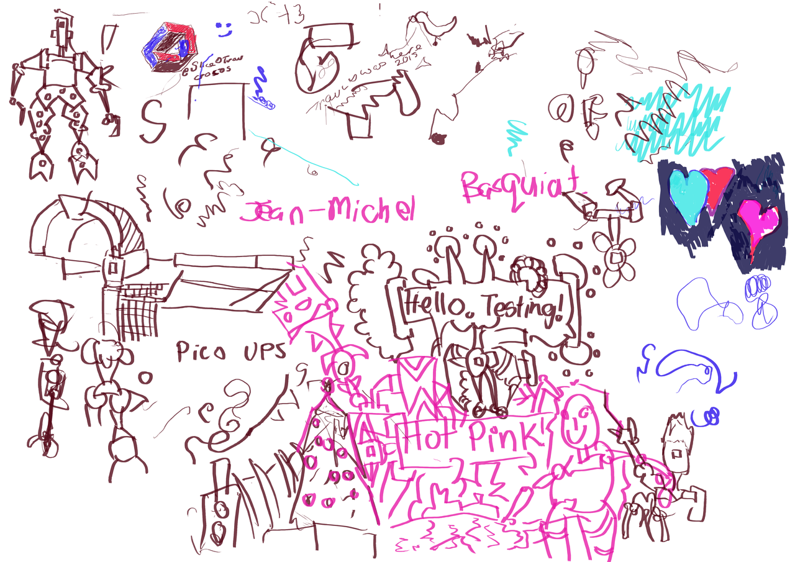
This was the result of leaving my Pi setup on a talk at the VIP/Speaker
event at KiwiCon9. Had requests to change the colour to 'hot pink'.
Several people had a go with the Wacom Drawing tablet. Gives me a break
from it!
That's a decent post for the start of the year. It is my goal this year
to keep this site more up to date with my artwork. I have the Raspberry
Pi portable device that I can use to make digital painting wherever I go
and write the blog posts using nano and then build the site with Nikola.